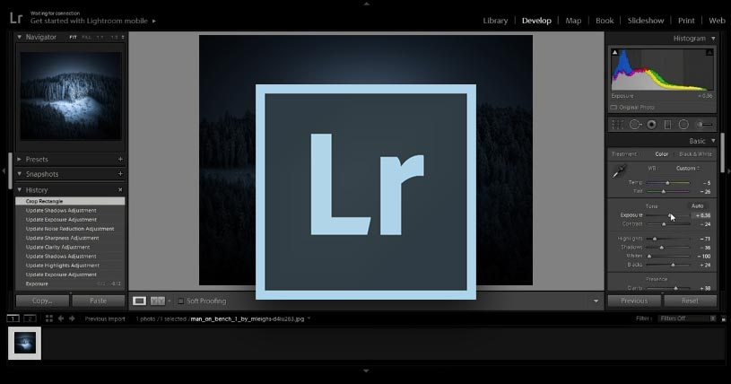
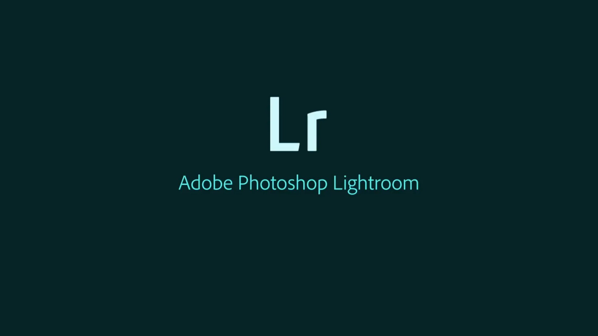
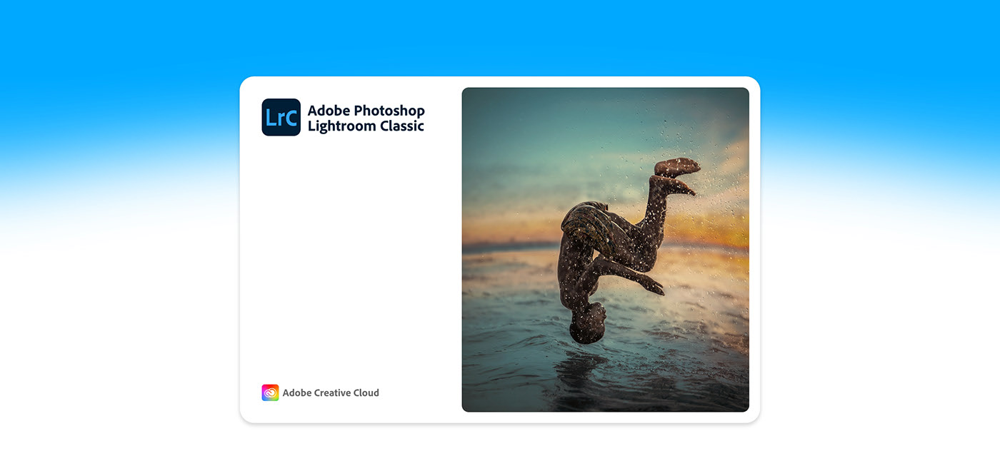
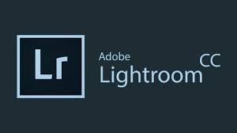

|
Adobe Lightroom |
Apresentação
|  | Adobe Photoshop Lightroom CC é um aplicativo feito para quem precisa organizar suas fotos em coleções e realizar pequenos ajustes corretivos, como luz, cor, nitidez e muito mais. Diferentemente do Lightroom Classic, este software tem como diferencial a sincronia com a nuvem. O software é pago no Windows, mas pode ser testado gratuitamente por sete dias, e gratuito no Android e no iOS. |
| O programa traz funções básicas para edição de imagem, além de recursos mais profissionais. O software permite recortar e redimensionar imagens, aplicar filtros e regular parâmetros de cores, fazer ajustes de exposição e brilho em fotografias. Além disso, usuários iniciantes podem usar o Photoshop para remover manchas e espinhas da pele, inserir textos sobre imagens e simular o efeito modo retrato encontrado em aplicativos e recursos da câmera de celulares. |  |
|  | Indicado para fotógrafos profissionais, o software tem uma interface tão intuitiva, que o app pode ser usado normalmente por qualquer pessoa. Do lado esquerdo da tela, ficam as opções para importar fotos e criar álbuns. Já do lado direito, todos os botões para a edição. |
|  |